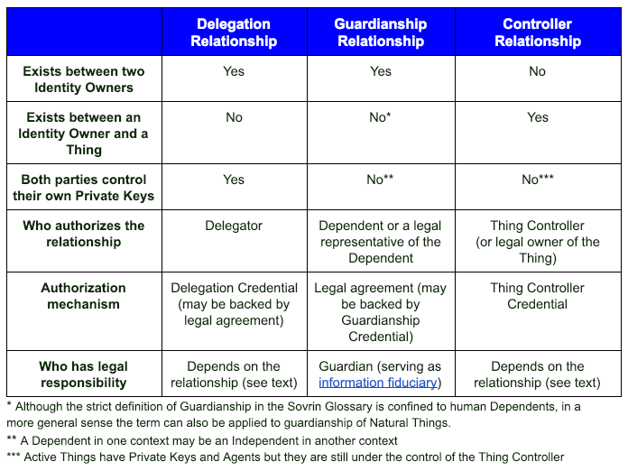

Aries RFC 0103: Indirect Identity Control¶
- Authors: Daniel Hardman
- Status: PROPOSED
- Since: 2019-06-04
- Status Note: Currently under study for implementation in various pilots and POCs. See, for example, the Sovrin Foundation's Guardianship Task Force.
- Start Date: 2019-05-10
- Tags: concept, credentials
Summary¶
Compares and contrasts three forms of indirect identity control that have much in common and that should be explored together: delegation, guardianship, and controllership. Recommends mechanisms that allow identity technology to model each with flexibility, precision, and safety. These recommendations can be applied to many decentralized identity and credentialing ecosystems--not just to the ones best known in Hyperledger circles.
Motivation¶
In most situations, we expect identity owners to directly control their own identities. This is the ideal that gives "self-sovereign identity" its name. However, control is not so simple in many situations:
-
A corporation is governed by a Board of Directors, executives, and employees with multiple levels of delegated authority. The control relationships are dynamic and complex. (delegation)
-
Parents typically manage the identities of their young children. Adult children may need to exercise the identity of a parent with dementia, or of a parent who recently passed away. (guardianship)
-
A self-driving car may be capable of many independent actions, but behind such a smart device must be a human entity that takes legal responsibility. (controllership)
We need to understand how such situations color the interactions we have in an identity ecosystem.
Tutorial¶
Although the Sovrin Foundation advocates a specific approach to verifiable credentials, its glossary offers a useful analysis of indirect identity control that applies to any approach. Appendix C of the Sovrin Glossary V2 defines three forms of indirect identity control relationship--delegation, guardianship, controllership--matching the three bulleted examples above. Reviewing that document is highly recommended. It is the product of careful collaboration by experts in many fields, includes useful examples, and is clear and thorough.
Here, we will simply reproduce two diagrams as a summary:


Note: The type of delegation described in Appendix C, and the type we focus on in this doc, is one that crosses identity boundaries. There is another type that happens within an identity, as Alice delegates work to her various agents. For the time being, ignore this intra-identity delegation; it is explored more carefully near the end of the Delegation Details doc.
Commonalities¶
All of these forms of identity control share the issue of indirectness. All of them introduce risks beyond the ones that dominate in direct identity management. All of them complicate information flows and behavior. And they are inter-related; guardians and controllers often need to delegate, delegates may become controllers, and so forth.
The solutions for each ought to have much in common, too--and that is the case. These forms of indirect identity control use similarly structured credentials in similar ways, in the context of similarly structured trust frameworks. Understanding and implementing support for one of them should give developers and organizations a massive headstart in implementing the others.
Before we provide details about solutions, let's explore what's common and unique about each of the three forms of indirect identity control.
Compare and Contrast¶
Delegation¶

Delegation can be either transparent or opaque, depending on whether it's obvious to an external party that a delegate is involved. A lawyer that files a court motion in their own name, but on behalf of a client, is a transparent delegate. A nurse who transcribes a doctor's oral instructions may be performing record-keeping as an opaque delegate, if the nurse is unnamed in the record.
Transparent delegation is safer and provides a better audit trail than opaque delegation. It is closer to the ethos of self-sovereign identity. However, opaque delegation is a fact of life; sometimes a CEO wants her personal assistant to send a note or meeting invitation in a way that impersonates rather than explicitly representing her.
Delegation needs constraints. These can take many forms, such as:
Constraints¶
- Time (for what period(s) delegate has that status)
- Place (in what physical or virtual locations delegate is approved)
- Function (legal vs. medical vs. educational)
- Circumstances (for particular event(s))
- Biometrics (for delegator involvement)
- Relationships (who delegate can interact with)
- Attributes (data/credentials -- what delegate can know or prove about delegator)
- Agents (what software/devices delegate can use)
- Cooperation (act as delegate with joint approval of other delegates)
- Oversight (audit trail, reporting)
Delegation needs to be revokable.
Delegates should not mix identity data for themselves with data that may belong to the delegator.
The rules of how delegation work need to be spelled out in a trust framework.
Sometimes, the indirect authority of a delegate should be recursively extensible (allow sub-delegation). Other times, this may be inappropriate.
Use cases and other specifics of delegation are explored in greater depth in the Delegation Details doc.
Guardianship¶

Guardianship has all the bolded properties of delegation: transparent or opaque styles, constraints, revocation, the need to not mix identity data, the need for a trust framework, and the potential for recursive extensibility. It also adds some unique considerations.
Since guardianship does not always derive from dependent consent (that is, the dependent is often unable to exercise sovereignty), the dependent in a guardianship relationship is particularly vulnerable to abuse from within.

Because of this risk, guardianship is the most likely of the three forms of indirect control to require an audit trail and to involve legal formalities. Its trust frameworks are typically the most nuanced and complex.
Guardianship is also the form of indirect identity control with the most complications related to privacy.
Guardianship must have a rationale -- a justification that explains why the guardian has that status. Not all rationales are equally strong; a child lacking an obvious parent may receive a temporary guardian, but this guardian's status could change if a parent is found. Having a formal rationale allows conflicting guardianship claims to be adjudicated.

Either the guardian role or specific guardianship duties may be delegated. An example of the former is when a parent leaves on a long, dangerous trip, and appoints a grandparent to be guardian in their absence. An example of the latter is when a parent asks a grandparent to drive a child to the school to sign up for the soccer team. When the guardian role is delegated, the result is a new guardian. When only guardianship duties are delegated, this is simple delegation and ceases to be guardianship.
Use cases and other specifics of guardianship are explored in greater depth in the Guardianship Details doc.
Controllership¶

Controllership shares nearly all bolded ../../features with delegation. It is usually transparent because things are usually known not to be identity owners in their interactions, and things are assumed not to control themselves.
Like guardianship, controllership has a rationale. Usually, it is rooted in property ownership, but occasionally it might derive from court appointment. Also like guardianship, either the role or specific duties of controllership may be delegated. When controllership involves animals instead of machines, it may have risks of abuse and complex protections and trust frameworks.
Unlike guardianship, controlled things usually require minimal privacy. However, things that constantly identify their controller(s) in a correlatable fashion may undermine the privacy of controllers in ways that are unexpected.
Use cases and other specifics of controllership are explored in greater depth in the Controllership Details doc.
Solution¶
We recommend that all three forms of indirect identity control be modeled with some common ingredients:
-
A proxy trust framework that specifies the rules and conventions in force for a particular class of indirect identity control use cases.
-
A proxy credential that binds a controlled entity to its proxy and clarifies the nature and limits of the control for that specific relationship.
-
A proxy challenge that evaluates the proxy credential in a particular context, proving or disproving the legitimacy of indirect control and creating opportunities for auditing and enforcement.
Here, "proxy" is used as a generic cover term for all three forms of indirect identity control. Each ingredient has a variant for each form (e.g., delegate credential, guardian credential, controller credential), and they have minor differences. However, they work so similarly that they'll be described generically, with differences noted where necessary.
Proxy Trust Framework¶
A proxy trust framework is a published, versioned document (or collection of documents) that's accessible by URI. Writing one doesn't have to be a massive undertaking; see the sample guardianship trust framework for a simple example).
It should answer at least the following questions:
-
What is the trust framework's formal name, version, and URI? (The name cannot include a
/character due to how it's paired with version in credentialtypefields. The version must follow semver rules.) -
In what geos and legal jurisdictions is it valid?
-
On what rationales are proxies appointed? (For guardianship, these might include values like
kinshipandcourt_order. Each rationale needs to be formally defined, named, and published at a URI, because proxy credentials will reference them. This question is mostly irrelevant to delegation, where the rationale is always an action of the delegator.) -
What are the required and recommended behaviors of a proxy (holder), issuer, and verifier? How will this be enforced?
-
What permissions vis-a-vis the proxied identity govern proxy actions? (For a delegate, these might include values like
sign,pay, orarrange_travel. For a guardian, these might include values likefinancial,medical,do_not_resuscitate,foreign_travel, ornew_relationships. Like rationales, permissions need to be formally defined and referencable by URI.) -
What are possible constraints on a proxy? (Constraints are bound to particular proxies, whereas a permission model is bound to the identity that the proxy is controlling; this distinction will make more sense in an example. Some constraints might include
geo_radius,jurisdiction,biometric_consent_freshness, and so forth. These values also need to be formally defined and referencable by URI.) -
What auditing mechanisms are required, recommended, or allowed?
-
What appeal mechanisms are required or supported?
-
What proxy challenge procedures are best practice?
-
What freshness rules are used for revocation testing and offline mode?
Proxy Credential¶
A proxy credential conforms to the Verifiable Credential Data Model 1.0. It can use any style of proof or data format (JSON-LD, JWT, Sovrin ZKP, etc). It is recognizable as a proxy credential by the following characteristics:
-
Its
@contextfield, besides including the "https://www.w3.org/2018/credentials/v1" required of all VCs, also includes a reference to this spec: "https://github.com/hyperledger/aries-rfcs../../concepts/0103-indirect-identity-control". -
Its
typefield contains, in addition to "VerifiableCredential", a string in the format:
...where
formis one of the letters D (for Delegation), G (for Guardianship), or C (for controllership),trust frameworkis the name that a Proxy Trust Framework formally declares for itself,tfveris its version, andvariantis a specific schema named in the trust framework. A regex that matches this pattern is:Proxy\.([DGC])/([^/]+)/(\d+[^/]*)/(.+), and an example of a matching string is:Proxy.G/UNICEF Vulnerable Populations Trust Framework/1.0/ChildGuardian. -
The metadata fields for the credential include
trustFrameworkURI(the value of which is a URI linking to the relevant trust framework),auditURI(the value of which is a URI linking to a third-party auditing service, and which may be constrained or empty as specified in the trust framework), andappealURI(the value of which is a URI linking to an arbitration or adjudication authority for the credential, and which may be constrained or empty as specified in the trust framework). -
The
credentialSubjectsection of the credential describes a subject calledholderand a subject calledproxied. The holder is the delegate, guardian, or controller; the proxied is the delegator, dependent, or controlled thing. -
credentialSubject.holder.typemust be a URI pointing to a schema forcredentialSubject.holderas defined in the trust framework. The schema must include the following fields:-
role: A string naming the role that the holder plays in the permissioning scheme of the dependent. These roles must be formally defined in the trust framework. For example, a guardian credential might identify the holder (guardian) as playing thenext_of_kinrole, and thisnext_of_kinrole might be granted a subset of all permissions that are possible for the dependent's identity. A controllership credential for a drone might identify the holder (controller) as playing thepilotrole, which has different permissions from themaintenance_crewrole. -
rationaleURI: Required for guardian credentials, optional for the other types. This links to a formal definition in the trust framework of a justification for holding identity control status. For guardians, the rationaleURI might point to a definition of theblood_relativeortribal_memberrationale, for example. For controllers, the rationaleURI might point to a definition oflegal_appointmentorproperty_owner.
The schema may also include zero or more
credentialSubject.holder.constraint.*fields. These fields would be used to limit the time, place, or circumstances in which the proxy may operate. -
-
credentialSubject.proxied.typemust be a URI pointing to a schema forcredentialSubject.proxiedas defined in the trust framework. The schema must include apermissionsfield. This field contains an array of SGL rules, each of which is a JSON object in the form:A complete example for a guardianship use case is provided in the SGL tutorial.
-
The credential MAY or MUST contain additional fields under
credentialSubject.holderthat describe the holder (e.g., the holder's name, DID, biometric, etc.). If the credential is based on ZKP/link secret technologies, then these may be unnecessary, because the holder can bind their proxy credential to other credentials that prove who they are. If not, then the credential MUST contain such fields. -
The credential MUST contain additional fields under
credentialSubject.proxiedthat describe the proxied identity (e.g., a dependent's name or biometric; a pet's RFID tag; a drone's serial number).
Proxy Challenge¶
A proxy challenge is an interaction in which the proxy must justify the control they are exerting
over the proxied identity. The heart of the challenge is a request for a verifiable presentation
based on a proxy credential, followed by an evaluation of the evidence. This evaluation includes
traditional credential verification, but also a comparison of a proxy's role (credentialSubject.holder.role)
to permissions (credentialSubject.proxied.permissions), and a comparison of circumstances
to constraints (credentialSubject.holder.constraints.*). It may also involve the creation of
an audit trail, depending on the value of the auditURI field.
During the verifiable presentation, the holder MUST disclose all of the following fields:
@contexttypeissuanceDate(if present in schema)expirationDate(if present in schema)credentialStatus(if present in schema)issuertrustFrameworkauditURIappealURIcredentialSubject.holder.typecredentialSubject.holder.rolecredentialSubject.holder.rationaleURIcredentialSubject.holder.constraints.*credentialSubject.proxied.typecredentialSubject.proxied.permissions
In addition, the holder MUST prove that the proxy is the intended holder of the
credential, to whatever standard is required by the trust framework. This can be
done by disclosing additional fields under credentialSubject.holder, or by proving
things about the holder in zero knowledge, if the credential supports ZKPs. In the
latter case, proofs about the holder could also come from other credentials in the
holder's possession, linked to the proxy credential through the link secret.
The holder MUST also prove that the proxied identity is correct, to whatever standard
is required by the trust framework. This can be done by disclosing additional fields
under credentialSubject.proxied, or by proving things about the subject in zero
knowledge.
[TODO: discuss moments when proxy challenges may be vital; see https://docs.google.com/presentation/d/1aq45aUHTOK_WhFEICboXQrp7dalpLm9-MGg77Nsn50s/edit#slide=id.g59fffee7a0_0_39 ]
[TODO: discuss offline mode, freshness, and revocation]
Reference¶
A complete sample of a guardianship trust framework and credential schema are attached for reference. Please also see the details about each form of indirect identity control:
Implementations¶
The following lists the implementations (if any) of this RFC. Please do a pull request to add your implementation. If the implementation is open source, include a link to the repo or to the implementation within the repo. Please be consistent in the "Name" field so that a mechanical processing of the RFCs can generate a list of all RFCs supported by an Aries implementation.
| Name / Link | Implementation Notes |
|---|---|